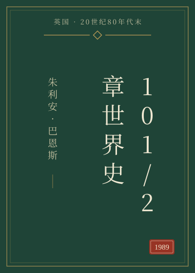
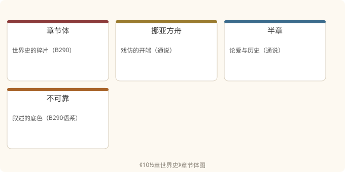

10 1/2章世界史
一、基本信息
| 作者 | 朱利安·巴恩斯 |
|---|---|
| 成书/出版 | 1989年（Britannica B290：A History of the World in 10½ Chapters (1989)） Julian Barnes — Encyclopaedia Britannica（百科全书） |
| 国别/地区 | 英国 |
| 时代 | 现当代 · 20世纪80年代末 |
| 体裁 | 长篇小说（章节体） |
| 语言 | 英语 |

《10½章世界史》章节体图（主题·结构图）
二、创作背景
Britannica（B290）：A History of the World in 10½ Chapters (1989)——作者页列举。
Britannica（B290）：巴恩斯 Flaubert's Parrot (1984)——'a humorous mixture of biography, fiction, and literary criticism'——本作延续其文体实验。
Britannica（B290）：The Sense of an Ending——'uses an unreliable narrator to explore the subjects of memory and aging'（2011布克奖）。
三、内容脉络
（通说待核——B290未载篇目）以挪亚方舟木虫为'第1章'的世界史碎片。
（通说待核）'半章'：论爱与历史的插叙。
四、主要人物表
| 人物 | 身份 | 说明 |
|---|---|---|
| 众声叙述者 | 章节体 | （通说待核） |
五、主题与艺术特点
- 历史的不可靠叙述（B290：《终结的感觉》unreliable narrator 语系）。
- 挪亚方舟的戏仿（通说待核）。
- 爱与幸存（通说待核）。
六、影响与评论
- Britannica：巴恩斯2011布克奖（B290）。
Julian Barnes — Encyclopaedia Britannica（百科全书） - Britannica：'biography, fiction, and literary criticism'的混合文体（B290 交叉）。
Julian Barnes — Encyclopaedia Britannica（百科全书）
七、阅读建议
难点
- 章节体的松散性。
- 历史与虚构的边界。
- 《10 1/2章世界史》中译本（译林等——通说待核）。
- 英文原版。
巴恩斯文体实验首选；后接《终结的感觉》。
八、待核实
- '第半章'细节核对（通说）。
- 1989年出版（Jonathan Cape说）待核。
- 章节名核对（B290未载）。
本页主要来源
朱利安·巴恩斯的其他收录作品：福楼拜的鹦鹉10 1/2章世界史